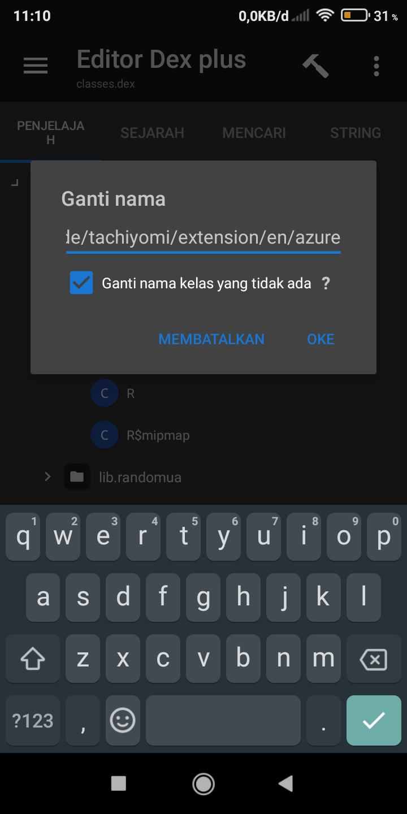

Buat Ekstensi Sendiri (Di Clone)
Cara ini tidak bisa dibilang bikin, karna bikin harus pakai komputer atau Laptop
1. Siapkan Ekstensi yang akan kita Clone, kita make Azure Scans buat contoh, klik ekstensinya pilih FUNGSI dan pilih Klon APK centang Gunakan metode kloning lama lalu kilik OKE
Ekstensi sudah berhasil di clone, jangan install dulu
Edit file Classes.dex dari ekstensi yang sudah di clone tadi dan cari nama Azure Scans dan ganti jadi Azure saja, simpan dan pasang hasil cloning tadi
Nah sukses tuh kalau langkahnya bener
Bisa juga clone lebih dari satu, tapi syaratnya haruslah yang di clone itu Ekstensi yang sudah di clone, Ekstensi yang udah di clone, kita clone lagi, terus secara berurutan, misal ekstensi yg di clone ada tiga, kita clone yang ke tiga agar jadi clone yang ke empat, jangan yang ori di clone buat dijadikan ke empat, itu gak bakal work, di install pun gak bakal muncul di tachi, dan nama pun harus beda agar tidak bentrok
Selesai, silahkan clone sebanyak mungkin kalo mau, tapi buat apa juga banyak2 :v
NOTE: Ekstensi yg di clone gak bakal dapat update, karna nama package tidak ada dalam daftar Ekstensi di official, jadi kalau web yang kalian cari udah ada ekstensinya dari official ya pasang aja (kalau mau)
Tahap Selanjutnya (Optional)
Cara ini boleh dipakai kalau mau, tujuannya buat mengclone sampai ke akar2 nya (biar keren) 😎
1. Edit file Classes.dex tapi yang ini bukan di Kolam Tali, tapi di Editor Dex Plus, ketika sudah di klik, akan terbuka di editor yang lebih detail dari Kolam Tali, tampilan pertama kita di perlihatkan dengan satu folder, klik foldernya dan akan terbuka folder lainnya, ada folder yang namanya extension buka folder itu dan didalamnya ada folder lagi dengan en.azurescans klik tahan folder itu lalu pilih Ganti nama
Ganti namanya dari azurescans atau azurescant (namanya akan beda tergantung cloningan keberapa yang di edit) jadi azure lalu klik ok, lihat gambar dibawah

2. Tolong langkah yang ini dibaca bener2
Selanjutnya kita akan mengganti nama file yang warna biru, klik tahan file itu lalu Ganti Nama, perhatikan, ganti namanya menjadi Azure dengan huruf A besar di depannya, jangan asal ganti nama nanti error, jadi urutannya harusnya en/azure/Azure
3. Selanjutnya kita buka file Azure yang berwarna biru, akan ada banyak kode, tujuan kita untuk mengganti nama AzureScans.kt menjadi Azure.kt agar sama namanya dengan nama file biru, ingat, besar kecilnya huruf gak boleh beda
Selanjutnya kita aka membersihkan nama azurescans, geser ke kekanan ke bagian pencarian lalu cari kata azurescans dan cari, akan ketemu 13 biji
Klik Ganti dalam hasil saat ini, ada dibagian atas, klik aja, lalu ikuti seperti gambar dibawah, kalu dibagian ini, besar kecilnya huruf gak masalah, ganti dengan nama kalian juga gpp
Lalu klik Mulai pencarian baru dan masukkan azurescan tanpa huruf terakhir, huruf terakhir bisa saja huruf S, T, U, V, W, tergantung cloning keberapa yang di edit, jadi jangan masukkan huruf terakhirnya, cukup azurescan saja
Ketemu tuh, ganti en.azurescan beserta huruf belakangnya menjadi en.azure lihat gambar dibawah cara penulisanya
Ok itu yang terakhir di file Dex ini, keluar dan simpan, file dex sudah gak ada lagi yang harus di ubah
3. tujuan kita selanjutnya adalah file AndroidManifest.xml untuk membuka file ini, haruslah dengan metode Dekompilasi, untuk melakukannya, haruslah terhubung dengan koneksi internet dan kalian wajib daftar akun, daftar asal aja asalkan terdaftar, jika sudah semua, klik filenya lalu pilih Dekompilasi, tunggu sampai terbuka, kalau sudah terbuka, ubah bagian seperti gambar dibawah yang awalnya en.azurescan jadi en.azure hurufnya harus kecil
Ubah juga bagian Tachiyomi: Azure Scans menjadi.... terserah kalian.
Ubah bagian .AzureScans menjadi .Azure, perhatikan, ada titik didepan kata Azure, itu gak boleh diganti dan huruf depannya haruslah besar agar sama dengan file biru di file dex dan Azure.kt, jadi jangan hilangkan titiknya.
Ok selelesai, akhirnya jadi ekstensi 98% mirip official :v
Ok tutor selesai, Selamat berbongkar bongkar.


PERINGATAN!!!!!
Jangan mencari untung dengan memendekkan URL biar cuan, apa lagi menjual dengan meminta pulsa atau semacamnya, pihak Tachiyomi ngasih kita ni app free tanpa biaya, tanpa iklan, kalau dari sana free, kita juga harus free, mohon pengertiannya
TERIMA KASIH